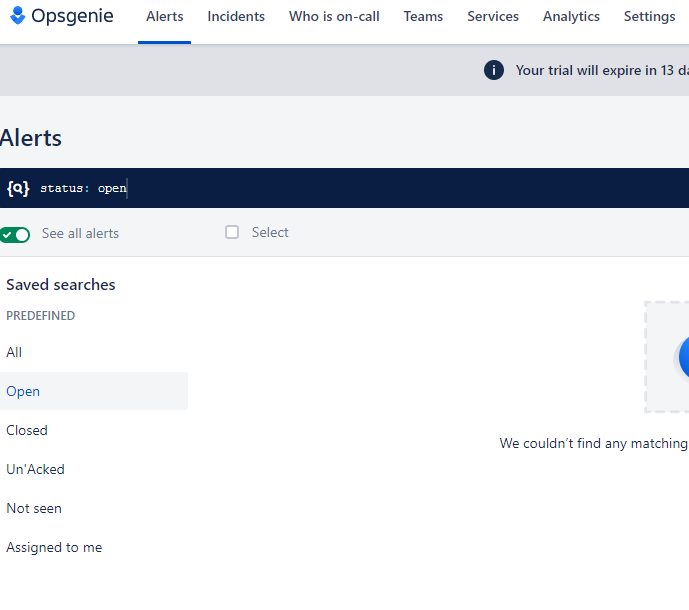
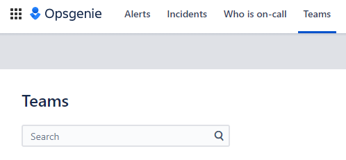
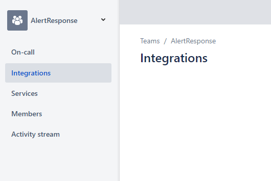
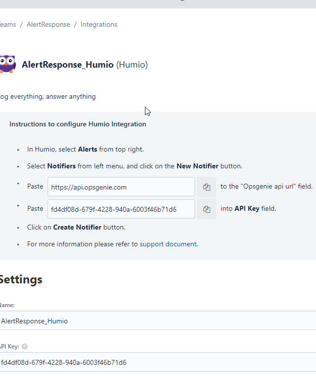

Opsgenie introduction
Opsgenie introduction
• Opsgenie is an alert and incident management app
• It can have alerts and incidents and alerts could become a part of an incident
• This documentation focuses on just alerts and not incidents
Alerts page looks like this
• Alerts can be created, acknowledged, and closed.
• Alerts have Priority level of 1-5, with 1 being critical and 5 being informational.
• Alerts also have Notes, where comments can be added
• Alerts can be created via integration w/ other products or via API as well
More information:
https://support.atlassian.com/opsgenie/docs/navigate-the-alerts-list/Add new Team on Teams page
Once the Team is added, go to the Team page and add Integration
Add integration for Humio and save integration
